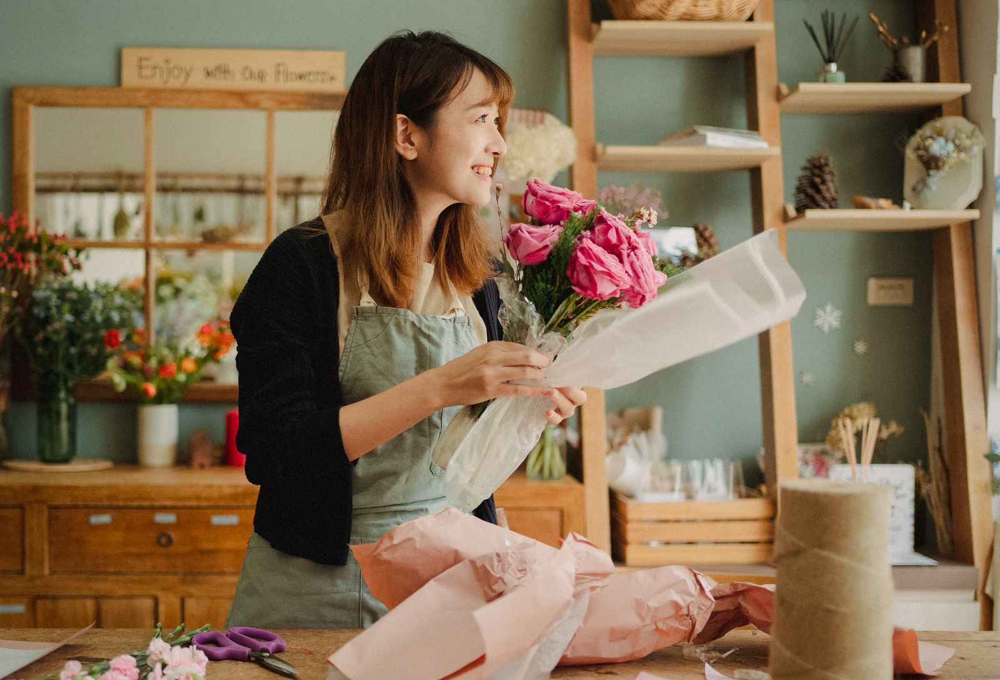

Lenteveld
Een regelmatiger jaar, ook buiten de feestdagen.

Het verhaal
Rond de feestdagen loopt de winkel vol, de rest van het jaar is het rustiger. Wie een vast boeket neemt, komt vaker terug, dus daar zoeken we de oplossing.
Op straat krijgt de winkel een gevelbord dat uitlegt wat er te halen valt en een kaart voor een abonnement. Op de lokale markt staat een kleine stand met dezelfde uitstraling. Online komt er een webshop waar je een boeket of abonnement kiest en laat leveren, en een nieuwsbrief die zegt wat er deze week in de winkel staat.
Het abonnement is het gezicht van alles: op het bord, op de kaart, op de markt en in de webshop wordt hetzelfde aangeboden.

Wat we zouden doen
Aanbod
Een eenvoudig abonnement dat in één zin uit te leggen is.
Winkel en markt
Gevelbord, abonnementskaarten en een kleine markstand.
Webshop
Bestellen en leveren zonder gedoe, ook voor zakelijke klanten.
Nieuwsbrief
Elke week kort wat er in de winkel staat.